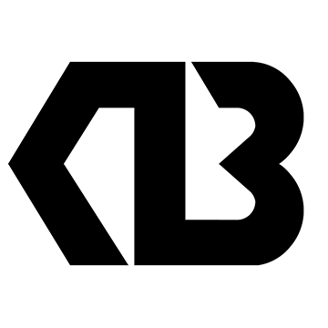

13 Reasons Why

About the Logo
The logo is an amalgamation of the letter K and the number 13.
And the thirteen reasons why I chose the number 13 is listed below.
- It’s my birth date.
I was born on the 13th day of the month. - It’s a number in the Fibonacci series.
A Fibonacci series is a series of numbers in which each number is the sum of the two preceding numbers. - It’s one of the only 3 known Wilson primes.
A Wilson prime is a prime number p such that p^2 divides (p − 1)! + 1, where “!” denotes the factorial function. - It’s a happy number.
A happy number is a number whose sum of the squares of its digits stabilize at 1 without looping forever. - It’s the smallest emirp number.
An emirp ("prime" spelled backward) is a prime whose reverse is also prime, but which is not a palindromic prime. - It’s the total number of Archimedean solids.
Archimedean solids are semi-regular convex polyhedrons composed of regular polygons meeting in identical vertices. - It’s the starting year of a teenage life.
This is the first year a person is considered a teenager. - It’s considered a lucky number in Italy.
In Italian, the expression “fare tredici” (meaning “to do 13”) means hit the jackpot. - It’s the number of ranks in a standard card deck.
In a deck of playing cards, there are 4 suits (clubs, diamonds, hearts, and spades) each of 13 ranks. - It’s the number of lunation in a year.
In a solar year, the Moon orbits the Earth 13 times. Also, the Moon travels across the sky every day by 13 degrees. - It’s an important day in the Hindu calendar.
In Hinduism, Pradosha Vrat (meaning “fast”) is observed on Trayodashi (13th lunar day) in honour of Lord Shiva. - It’s the number days of mourning in Hinduism.
In Hinduism, tehravin (13th day) marks the final day of mourning and the soul detaches itself to attain peace. - It’s because I don’t suffer from Triskaidekaphobia.
Triskaidekaphobia is the fear of the number 13.